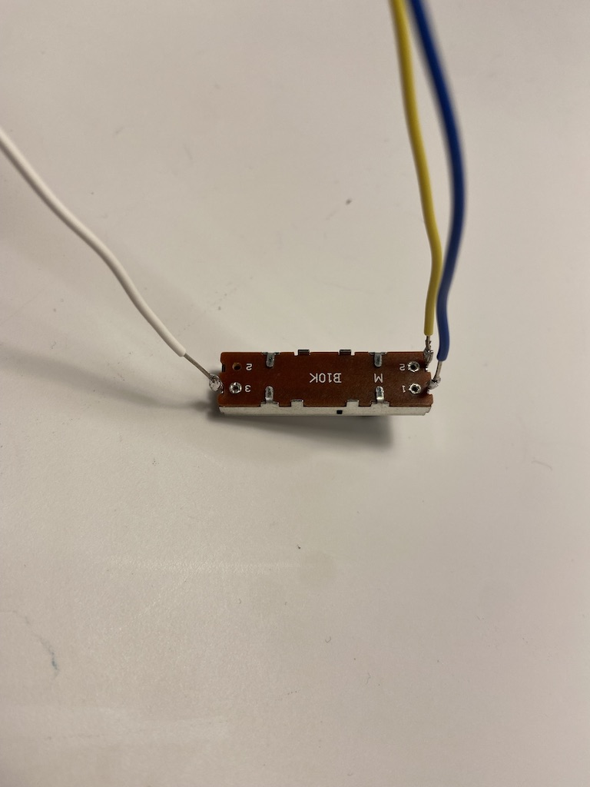
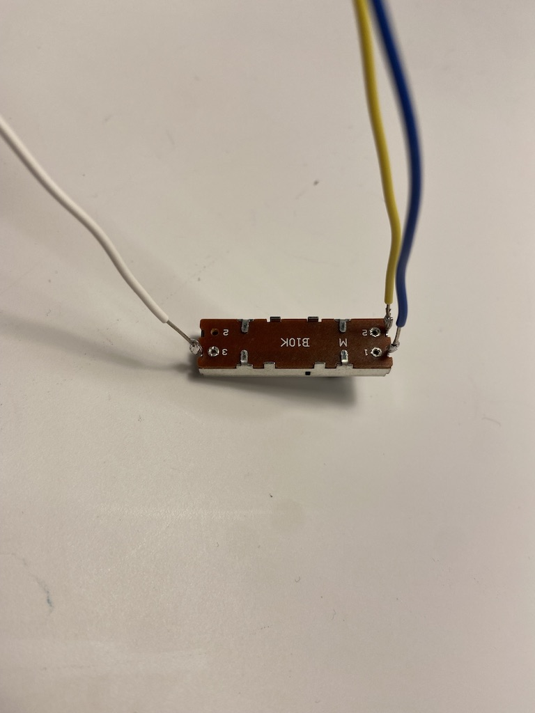

Part 1 lays out the basic use of analog signals. The circuit has one
potentiometer (pot) controlling an LED along side a photocell resistor
connected to another LED. A photocell resistor is a type of variable
resistor that resists the level of flow based on the amount of light
it is receiving. Since analog signal is a range, these input devices
allow the user to control the brightness of, and therefore the
current to, the LED’s. Setting up the circuit, the input components
must be connected to analog pins on the microcontroller (reference
Nano 33 IoTs pin-out), here I am using A0 and A1. First the pot is
connected to ground, signal (A1) and power; similarly, the photocell
resistor is connected to power, and signal (A0) and ground. There is
a 10k ohm resistor between the photocell and ground. The LED’s are
put in as normal, with an 100 ohm resistor.
When working with analog signals, it is important to know the values
that are being read by the sensors. To do this, I use the serial print
monitor to get the range of values I am receiving, and, using the map
function, adjust them to a range that can be output to my LED’s. The
input values are always some range between 0 and 1023, whereas the
LED’s work in a range 0 – 255. These ranges vary depending on the
type of component you are using, which is why it is always
important to check this first. Next, I used the analog write
function to output my adjusted signal to the LED’s. Here is a demo
video of the circuit
https://vimeo.com/manage/videos/636758855
.
THe second part of the lab uses analog signal to control frequency modulation.
The circuit uses two photo cell resistors, rather than the second
being fixed, creating a sort of musical instrument in the circuit.
This system has a buzzer to output the sound. The code here works in
basically the same was as part 1. First determining the range of input
values, then mapping those values to the output to generate a tone.
The buzzer can use frequencies 100Hz – 1000Hz, and I use the tone
function to generate the sound. Here is a demo for part 2.
https://vimeo.com/manage/videos/636772987
.
The final part of this lab tasks you with actually building an
interactive “box” containing two analog inputs and two different
outputs (at least one being analog). Box is in quotes as it is not
narrowly defined as a 6 sided cube, but rather any creative container
to hold the interaction. We put together an interactive car using a
servo motor controlled by a slider and LED’s controlled by photocell
resistor. The servo is designed as a windshield wiper on the front,
while the two headlights are reflective of the light around the car,
reflecting driving with lights in the dark. The schematic here has a
lot of familiar components. The LED’s are set up same way as always
with respective 100 ohm resistors. Setting up a servo motor is simple,
it is just connected to power, signal and ground. There are two
analog inputs in the photocell resistor and the slider, both to their
respective pins on the microcontroller.
This code is very similar to the rest of the code in this lab.
Starting with defining variables and determining input range. Then map
the input values to the LED lights (0-255) and the servo motor
(0-255) and use analog write to send the signals to the components.
With all the circuitry working, we got started on constructing the
box. We cut, bent and glued cardboard together to create a box
resembling the front half of a car. Then, in order to have or
components coming through the box, we soldered the LED’s, the
photocell resistor’s and the slider’s connections to longer
jumper wires. Next, we painted the car black and fit all of the
components into their respective spots in the car. The finalize the
product we added a small knob to the slider, as well as a pipe
cleaner (windshield wiper) on the servo motor.
Here is the final product along with a video of it in action.
https://vimeo.com/manage/videos/636836264

An Interactive Sensor Box
A lab to explore analog input and output through variable resistors.
 
